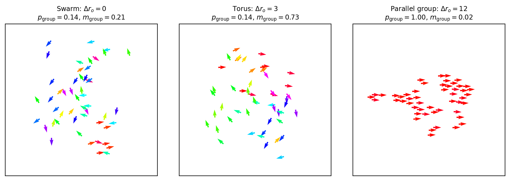

import numpy as np
import matplotlib.pyplot as plt
from amlab.collective_motion.couzin import couzin_equations, initialize_particles_couzin
def group_measures(xy, theta):
"""Group polarization p and angular momentum m of the Couzin paper (two dimensions)."""
p = abs(np.exp(1j * theta).mean())
rel = xy - xy.mean(axis=1, keepdims=True) # position relative to the centroid
rel = rel / np.linalg.norm(rel, axis=0) # unit vector r_ic
m = abs(np.mean(rel[0] * np.sin(theta) - rel[1] * np.cos(theta))) # z-component of r_ic x v_i
return p, m
def run_couzin(delta_ro, delta_ra, steps=2000, seed=1, N=50):
np.random.seed(seed) # the amlab functions use NumPy's global generator
xy, theta = initialize_particles_couzin(N, box_size=25.0)
for _ in range(steps):
xy, theta = couzin_equations(xy, theta, radius_alignment=1 + delta_ro,
radius_attraction=1 + delta_ro + delta_ra)
return xy, thetaThe Couzin Model
Module 2: Synchronization and Collective Behaviour
NoteReading
The Vicsek model is deliberately minimal: alignment, noise and self-propulsion. It has alignment only, so its groups spread out and have no boundary. Couzin et al. point out that models of this kind cannot form a self-bounded group when the error is greater than zero, because the particles neither avoid collisions nor are attracted to each other (Couzin et al. 2002). For animal groups such as fish schools and bird flocks two extra mechanisms are needed: collision avoidance (repulsion at short range) and group cohesion (attraction at longer range). Couzin et al. (2002) added both through a simple behavioural rule with three interaction zones. The model was built for three dimensions. The course uses a two-dimensional version.
Behavioural zones
\(N\) individuals have positions \(\mathbf{c}_i\) and unit direction vectors \(\mathbf{v}_i\). Time advances in steps of \(\tau = 0.1\) s, which corresponds to the response latency of fish. Around each individual there are three non-overlapping zones (Couzin et al. 2002):
- the zone of repulsion (zor), radius \(r_r\);
- the zone of orientation (zoo), from \(r_r\) to \(r_o\);
- the zone of attraction (zoa), from \(r_o\) to \(r_a\).
Neighbours in a blind region behind the individual, of angle \(360^\circ - \alpha\), are not detected. Here \(\alpha\) is the field of perception. Let \(\mathbf{r}_{ij} = (\mathbf{c}_j - \mathbf{c}_i)/|\mathbf{c}_j - \mathbf{c}_i|\) be the unit vector from \(i\) to neighbour \(j\), and let \(R_i(t)\), \(O_i(t)\) and \(A_i(t)\) be the sets of detected neighbours in the zones of repulsion, orientation and attraction, with \(n_r\), \(n_o\) and \(n_a\) elements. A neighbour in the blind region belongs to none of them.
Rules
Repulsion has priority. Individuals try to keep a minimum distance from others at all times, a behaviour often observed in animals. You can read the zone of repulsion as personal space, or as collision avoidance. If \(n_r > 0\) neighbours are in the zor, the desired direction is
\[ \mathbf{d}_i(t+\tau) = -\sum_{j \in R_i(t)} \mathbf{r}_{ij}(t). \tag{1}\]
Otherwise, orientation and attraction. If \(n_r = 0\), the individual responds to the neighbours in the zoo and in the zoa:
\[ \mathbf{d}_o(t+\tau) = \sum_{j \in O_i(t)} \frac{\mathbf{v}_j(t)}{|\mathbf{v}_j(t)|}, \qquad \mathbf{d}_a(t+\tau) = \sum_{j \in A_i(t)} \mathbf{r}_{ij}(t). \tag{2}\]
If only the zoo has neighbours, \(\mathbf{d}_i = \mathbf{d}_o\). If only the zoa has neighbours, \(\mathbf{d}_i = \mathbf{d}_a\). If both do, \(\mathbf{d}_i = \tfrac12(\mathbf{d}_o + \mathbf{d}_a)\). If the result is the zero vector, or no neighbour is detected, the individual keeps its direction, \(\mathbf{d}_i = \mathbf{v}_i\). We write the case of both zones as one rule, \(\mathbf{d}_i \propto \sum_{j \in O_i} \mathbf{v}_j/|\mathbf{v}_j| + \sum_{j \in A_i} \mathbf{r}_{ij}\). This is the same direction as \(\tfrac12(\mathbf{d}_o + \mathbf{d}_a)\): the factor \(\tfrac12\) only changes the length, and \(\mathbf{d}_i\) is normalised to a unit vector before it is used.
Noise. Decisions in animals are affected by sensory and movement errors. To model this, the desired direction is rotated by a random angle from a wrapped Gaussian with standard deviation \(\sigma\).
Limited turning. After every individual has computed \(\mathbf{d}_i\), all of them turn toward it with turning rate \(\theta\). If the angle between \(\mathbf{v}_i(t)\) and \(\mathbf{d}_i(t+\tau)\) is less than the maximum turning angle \(\theta\tau\), then \(\mathbf{v}_i(t+\tau) = \mathbf{d}_i(t+\tau)\). Otherwise the individual rotates by \(\theta\tau\) toward the desired direction. They move at constant speed \(s\).
Collective states
Couzin et al. (2002) measure two quantities, the group polarization and the group angular momentum:
\[ p_{\text{group}} = \frac{1}{N}\left|\sum_{i=1}^N \mathbf{v}_i\right|, \qquad m_{\text{group}} = \frac{1}{N}\left|\sum_{i=1}^N \mathbf{r}_{ic} \times \mathbf{v}_i\right|, \tag{3}\]
where \(\mathbf{r}_{ic}\) is the unit vector from the group centroid \(\mathbf{c}_{\text{group}} = N^{-1}\sum_i \mathbf{c}_i\) to individual \(i\). Both lie in \([0, 1]\). (The paper prints \(\mathbf{r}_{ic} = \mathbf{c}_i - \mathbf{c}_{\text{group}}\) without the normalisation, but then \(m_{\text{group}}\) would carry units of length and could exceed \(1\). The unit vector is what the stated range requires, and what the course code uses.) Varying the widths \(\Delta r_o = r_o - r_r\) and \(\Delta r_a = r_a - r_o\), they found four states:
| State | \(p_{\text{group}}\) | \(m_{\text{group}}\) |
|---|---|---|
| Swarm | low | low |
| Torus (milling) | low | high |
| Dynamic parallel group | high | low |
| Highly parallel group | very high | low |
We name three states: the polarized flock, the swarm and the mill (torus). The paper splits the polarized flock in two. In the dynamic parallel group the individuals are polarized and move as a coherent group, but they can move through the group and its density and shape fluctuate. In the highly parallel group the arrangement is almost static and rectilinear (Couzin et al. 2002). They appear as \(r_r\), \(r_o\), \(r_a\), the noise, the density and the field of view are varied: a different balance of short-range avoidance, mid-range alignment and long-range cohesion produces a different macroscopic organisation. The paper also finds that the torus is confined to a small range of widths when the field of perception is \(\alpha = 360^\circ\) and occupies more of parameter space as \(\alpha\) decreases, while fragmentation becomes common over the whole parameter space when \(\alpha\) is near \(230^\circ\).
The next figure shows three of these states in the course version of the model: \(N = 50\) individuals in the plane, \(r_r = 1\), \(\Delta r_a = 12\), \(\alpha = 270^\circ\), noise \(\sigma = 0.05\) rad, turning rate \(40^\circ\)/s, speed \(3\), \(\tau = 0.1\) s, starting at random in a \(25 \times 25\) square and run for \(2000\) steps.

A scan of \(\Delta r_o\) at \(\Delta r_a = 12\) with three random seeds (3000 steps, average over the last 500) gives the following picture for this version of the model.
- For \(\Delta r_o = 0\) to \(6\), \(p_{\text{group}}\) stays between \(0.09\) and \(0.23\). The angular momentum is high (\(0.58\) to \(0.77\)) for \(\Delta r_o\) from \(2\) to \(6\) in two of the three seeds, which is the torus. The third seed stays at \(m_{\text{group}} \approx 0.2\) and does not form a mill.
- For \(\Delta r_o \ge 8\), \(p_{\text{group}} \ge 0.99\) in all seeds, with \(m_{\text{group}} \le 0.05\) except for one seed at \(\Delta r_o = 8\) (\(m_{\text{group}} = 0.83\)), which we did not investigate. These are highly parallel groups. In this scan we did not find a clean dynamic parallel group; looking for one by changing \(\Delta r_a\) and the field of view is a task for Practice: Collective Motion.
- The transitions are much farther out than in the paper, whose Figure 4 has them at \(r_o \approx 1.5\) and \(2.5\) (that is, \(\Delta r_o \approx 0.5\) and \(1.5\)) for \(N = 100\) in three dimensions with \(r_a = 14\). Here the dimension, \(N\) and the starting region differ, and we did not look for the cause. Do not compare the thresholds, only the sequence of states.
Collective memory
The paper also finds collective memory: for the same parameters, the group state depends on the path taken through parameter space (Couzin et al. 2002). This is hysteresis, as in the spruce budworm model of Module 1 (Hysteresis). In the paper, \(r_a = 14\) is held fixed and \(r_o\) is increased and then decreased, with \(2000\) steps at each value. On the way up the group goes from swarm to torus (from \(r_o \approx 1.5\)) and to a polarized group (beyond \(r_o \approx 2.5\)). On the way down the polarization does not decrease, the angular momentum stays low and the torus is never entered, until the group falls back to a swarm below \(r_o \approx 1.5\) (Couzin et al. 2002).
The same effect appears in the course version. With \(\Delta r_a = 12\) we ran \(2000\) steps at \(\Delta r_o = 12\) (parallel group) or at \(\Delta r_o = 3\) (torus) and then \(2500\) steps at \(\Delta r_o = 7\), for seeds \(0\) to \(2\). Starting from the parallel group, all three runs stayed parallel (\(p_{\text{group}} \ge 0.998\), \(m_{\text{group}} \le 0.03\)). Starting from the torus, none became parallel (\(p_{\text{group}}\) between \(0.21\) and \(0.29\), \(m_{\text{group}}\) between \(0.20\) and \(0.72\)). Same parameters, different states. You can repeat this in the explorer below.
Couzin versus Vicsek
| Vicsek | Couzin | |
|---|---|---|
| Mechanisms | alignment only | repulsion, alignment and attraction |
| Cohesion | needs a periodic box with fixed density | self-bounded groups are possible |
| Collision avoidance | none | yes, in the zone of repulsion |
| Rule type | averaging plus noise | hierarchical: repulsion has priority |
| Outputs | order or disorder | swarms, mills, parallel groups, transitions between them, hysteresis |
The modelling lesson is that adding one mechanism changes the kind of collective pattern the model can reproduce.
NoteExercise
Set \(\Delta r_o = 0\) in the Couzin model. Which rules remain, and which collective state do you expect?
TipSolution
With no zone of orientation there is no alignment, only repulsion and attraction. Individuals stay together but do not align, so you expect a swarm: low \(p_{\text{group}}\) and low \(m_{\text{group}}\). This matches the swarm region of Couzin et al. (2002).
Explore the zones
The figure ports the two-dimensional model of the course code: \(r_r = 1\), field of perception \(\alpha = 270^\circ\), noise \(\sigma = 0.05\) rad, maximum turning rate \(40^\circ\)/s, speed \(s = 3\), \(\tau = 0.1\) s, and \(N = 50\) individuals starting at random in a \(25 \times 25\) square. The shaded sectors are the three zones of one individual (highlighted); the gap behind it is the blind region.
- Press Swarm (\(\Delta r_o = 0\)). Which rules are left, and do \(p\) and \(m\) match your answer to the exercise above?
- Press Torus, restart from random and wait. Which quantity is high? Describe the motion of a single individual.
- Press Parallel (\(\Delta r_o = 12\)). How long does it take until \(p\) is close to 1?
- Collective memory: from the parallel group, lower \(\Delta r_o\) to 7. Then press Torus, wait for the mill, and raise \(\Delta r_o\) to 7 again. Same parameters, different state?
- In the torus, reduce the attraction width \(\Delta r_a\) step by step, waiting a few seconds each time. Below which width does the mill break up, and which of the four states replaces it?
Build this in Python. In the lab you write the code behind this figure: Option A of Practice: Collective Motion, where you implement the zone rules and measure \(p_{\text{group}}\) and \(m_{\text{group}}\) to find the four collective states.
The code for this model is in amlab/collective_motion/couzin.py and the animation in amlab/collective_motion/couzin_animation.py. Implementing it is Option A of Practice: Collective Motion.
To explore the model before you code it, try the interactive Flock’n Roll explorable, which is based on Couzin et al. (2002).
Bridge to crowds
The Couzin model is a natural bridge to crowd models. Like Vicsek, it is rule-based, usually has constant speed and uses local interactions. Like the crowd models, it has explicit repulsion (personal space) and avoidance. The next step is to replace the “desired direction” rules by forces and accelerations, and to add obstacles, exits and goals. That is the social force model of Helbing and Molnár (1995), applied to a crowd at a door in Faster Is Slower. Going from Vicsek to Couzin adds realism (cohesion and avoidance) while keeping a simple agent rule. The same Couzin rules, with a predator added, are used in The Confusion Effect.
References
Couzin, Iain D, Jens Krause, Richard James, Graeme D Ruxton, and Nigel R Franks. 2002. “Collective Memory and Spatial Sorting in Animal Groups.” Journal of Theoretical Biology 218 (1): 1–11. https://doi.org/10.1006/jtbi.2002.3065.
Vicsek, Tamás, András Czirók, Eshel Ben-Jacob, Inon Cohen, and Ofer Shochet. 1995. “Novel Type of Phase Transition in a System of Self-Driven Particles.” Physical Review Letters 75 (6): 1226–29. https://doi.org/10.1103/PhysRevLett.75.1226.